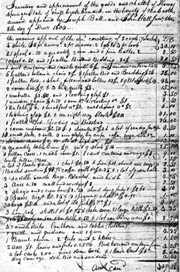

This is an archived copy of History Matters, provided by the Roy Rosenzweig Center for History and New Media. To explore this content in a new interface, visit Who Built America?.

|
Scholars In Action presents case studies that demonstrate how scholars interpret different kinds of historical evidence. This 1804 inventory lists the possessions of Thomas Springer of New Castle County, Delaware. Legal documents, such as tax records or probate inventories, often provide our only information about the lifestyles of ordinary people during the colonial and early national periods. Such listings of household possessions, from a time when household goods were not widely mass produced, can illuminate a fair amount about a family's routines, rituals, and social relations, as well as about a region's economy and its connections to larger markets. This inventory also contains items that suggest attitudes and policies toward slavery in the Mid-Atlantic states. Before you move to the next page, read the inventory yourself in both the original handwritten form and the typed version. What do the objects owned by Thomas Springer tell you about how he and his family lived? What were some of the more valuable objects and why were they more costly? What can you surmise about the Springer family's values based on this list of possessions? Are there items that you don't recognize or don't know the use of? Published online February 2002. Cite as: Barbara Clark Smith, "Analyzing an 1804 Inventory," History Matters: The U.S. Survey Course on the Web, http://historymatters.gmu.edu/mse/sia/inventory.htm, February 2002. |
||
 [see handwitten inventory] [see typed inventory] |
||